vheap--pwnhub五月公开赛
总结：
通过这道题的学习与收获有:
1、本题的核心是劫持__free_hook。利用memcpy溢出，更改free状态堆块的fd指针，将其改写完__free_hook的地址，然后申请回来，写入system地址，最终free掉存有/bin/sh的堆块获取shell。
2、学会了新技能——使用IDA新建结构体，同时分析了IDA中的宏，通过对这个宏取字节的分析又加深了对指针的理解
3、使用sprintf的格式化字符串漏洞泄露数据时，要考虑到format在第二个参数的影响，最后的距离栈顶的偏移只加5（并不考虑rdi寄存器）
4、做的第一道堆题，体会到了在堆块中布局来获取shell的思想。
保护策略:
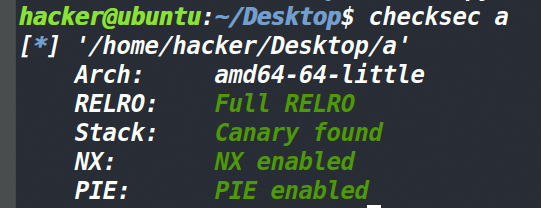
程序分析:
使用IDA创建结构体
打开最后一个函数，发现懵懵逼逼的。
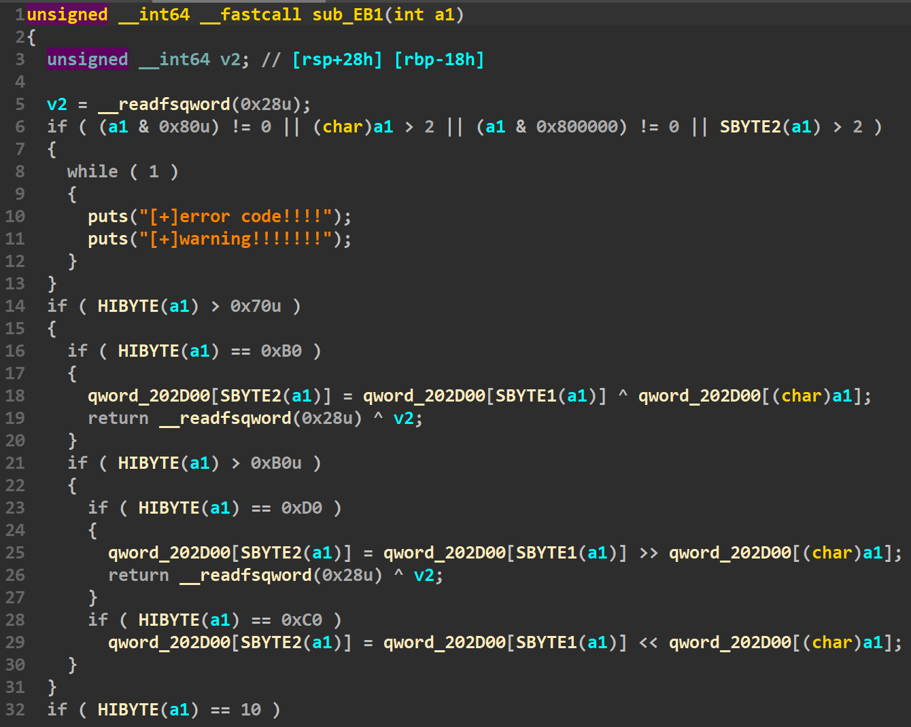
请教了roderick师傅后才知道这里应该新建一个结构体进行分析，因为这里通过分析就是在取32位整数的四个字节（分析SBYTE1和SBYTE2、HIBYTE这几个宏观察出来的）。因为IDA生成伪代码的时候，并不能百分百的确认这是一个结构体，所以只能靠这种宏的形式展示出来，为了方便分析我们需要手动构造一个结构体。
首先创建结构体之前，必须要分析出来结构体里的成员数量和类型。
这个函数的形参是int类型的a1，而之后SBYTE2和HIBYTE、SBYTE1都是取的a1中的某一字节，因此猜测这个结构体是四个char类型的变量。
创建结构体 方法1：
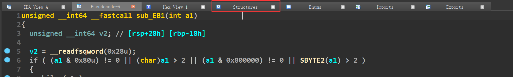

然后输入结构体的名字
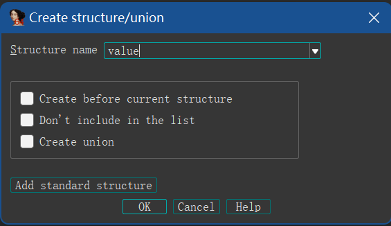
将光标点到ends上，然后按d
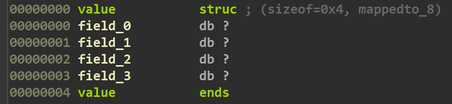
先创建四个变量，然后将光标点到field_0上，按n，重命名
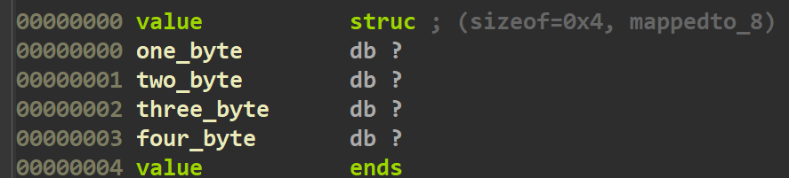
最后将光标点到函数名上，按y，然后修改第二个红色框里的内容（改成结构体的名字，我这里是更改成value）
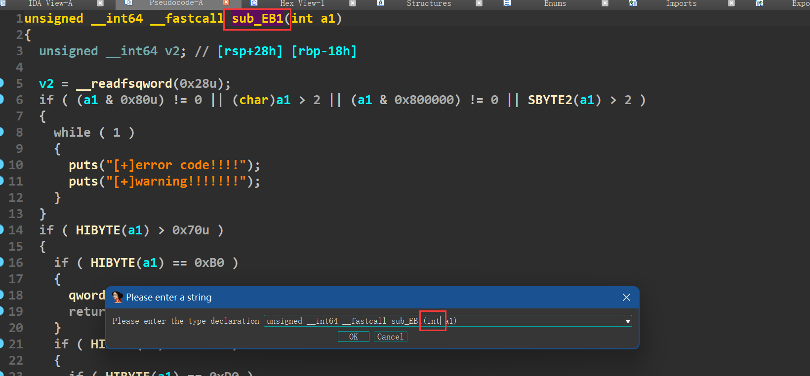
效果如下：
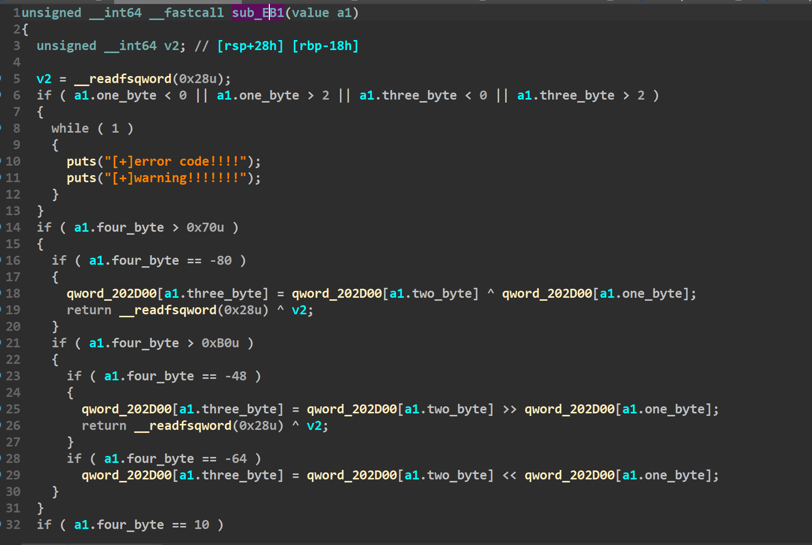
还有一种方法：
创建结构体 方法2：
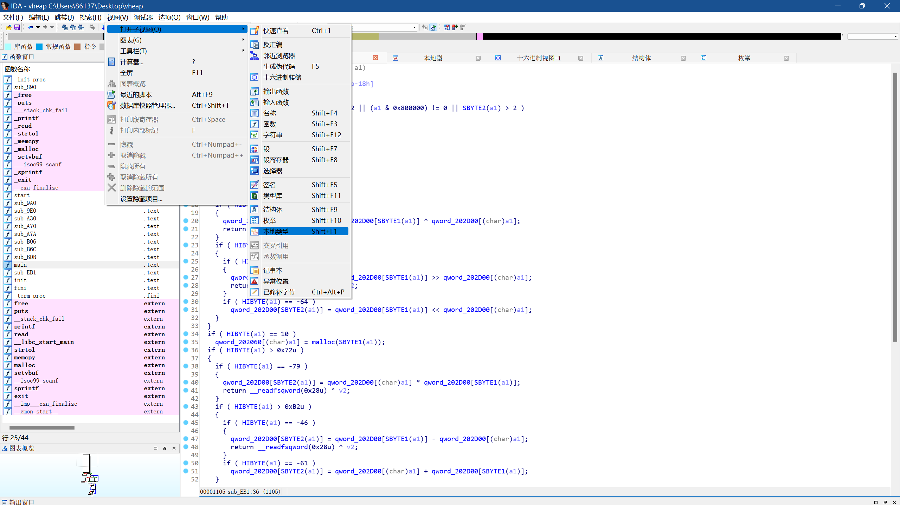
然后右键插入
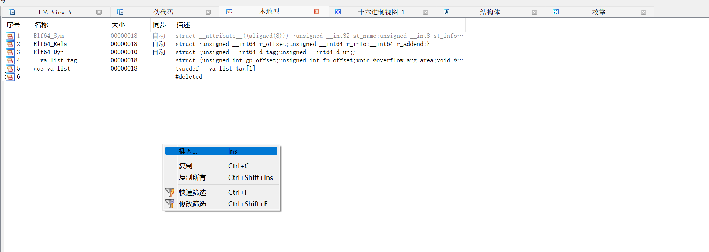
然后编辑结构体即可
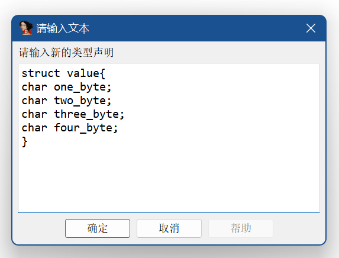
最后将原本的数据类型换成定义好的结构即可
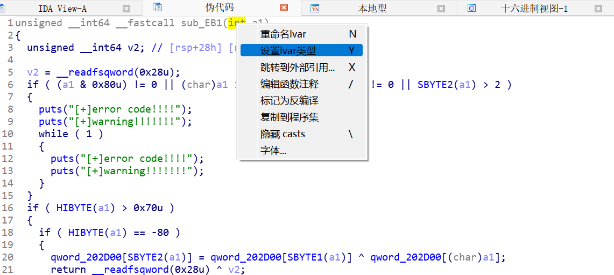
效果如下：
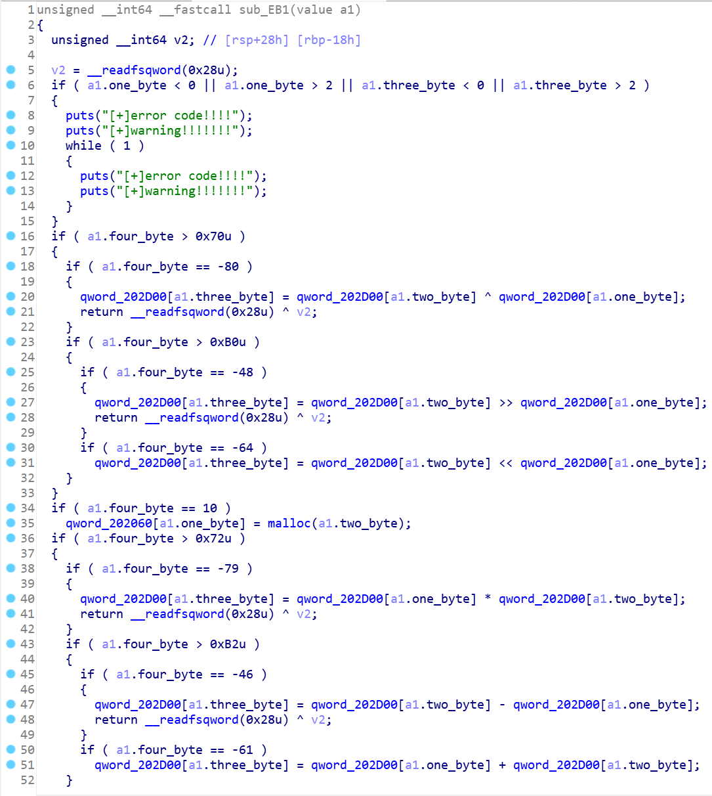
不过改完之后发现还是懵懵逼逼，因为还有个奇怪的qword_202D00不知道在干嘛。按x看一下交叉引用，发现了下面的代码
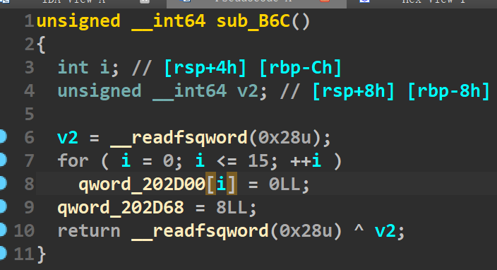
这里看起来是在进行初始化，不过干啥用的还是懵懵逼逼。roderick师傅告诉我说，这里循环了16个次，回想起题目的名字是vheap（虚拟机堆题，这道题只模拟了寄存器和opcode），因此猜测这里是将所有的寄存器进行了初始化。因此我们将这个qword_202D68给重命名regs。
最后看起来舒服多了，分析着也比较方便。
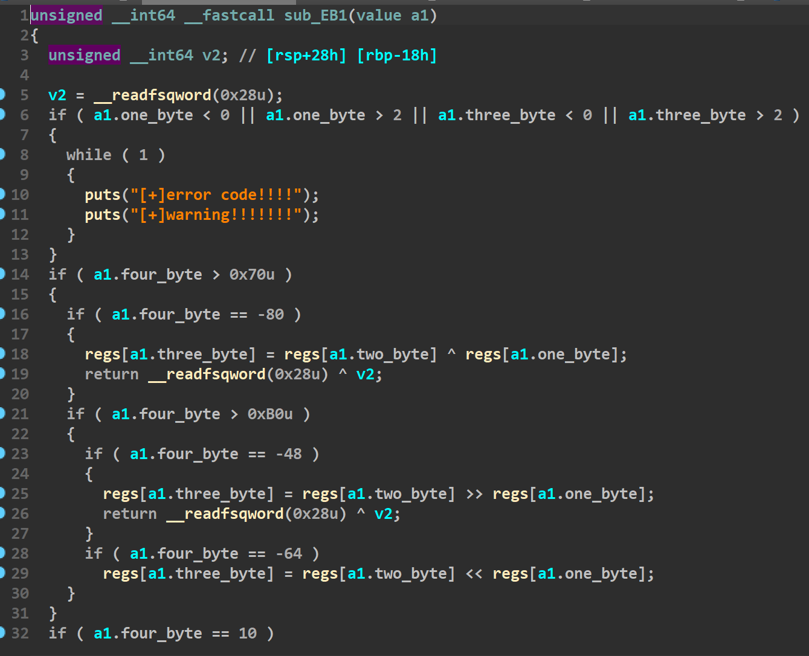
存在格式化字符串漏洞
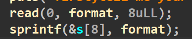
因为开了PIE，想实现任意写是够呛了，只能利用一次，而且没有准备好的跳板，因此猜测这里应该是用来泄露函数真实地址以来获取libc基地址的。
然后此处进行了一次输入
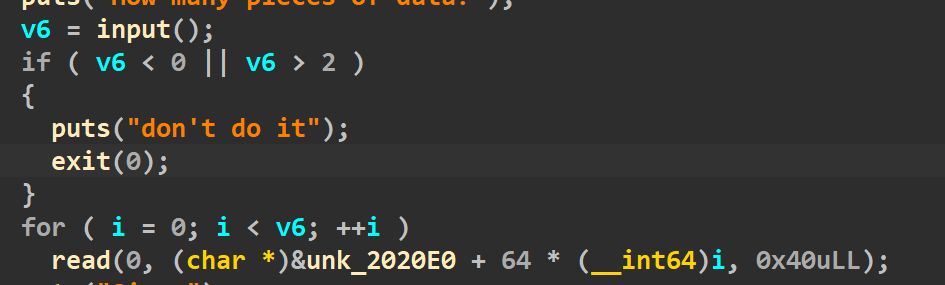
最多输入2，接下来的循环最多跑三次，这个循环是从2020E0这里开始存一些数据。
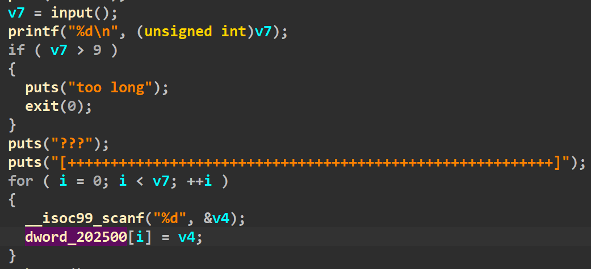
这里输入一个不大于9的数字，然后循环会跑对应的次数，不过这里看着有点懵，不知道有啥用，那就继续往后分析。
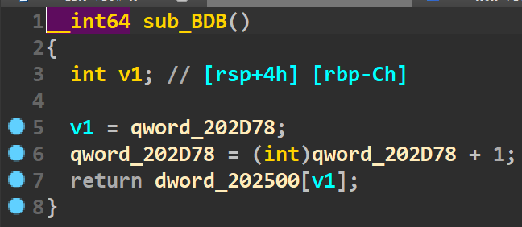
这个函数中的qword_202D78处于是bss段，存放的是0，通过循环每次+1，有点跟计数器一样，去不断的改变V1这个索引，来返回不同的值，索引是根据dword_202500找的，暂且记下，继续分析。
接下来就要分析最后的函数了。
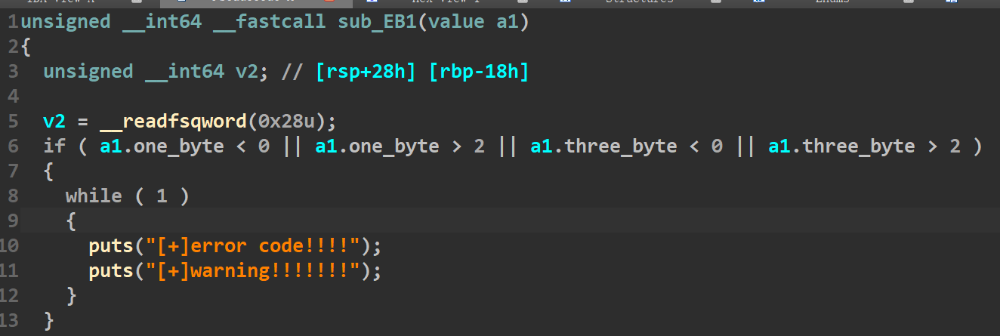
先是这个if不是太好过，卡了我很久。
分析取一字节宏的实现
这里换回原本的宏来说。就分析SBYTE1这一个宏吧。
|
&x 表示x的地址
(int8 *)&x这个地址转换成char *类型，不过这个地址依然不变，变的仅仅是它的类型
*((int8 *)&x+n) +n代表在原本的地址上加n个内存单元的偏移，这个内存单元取决于什么？取决于指针指向的变量类型，因为被强转成了char *，因此现在的变量是char类型，所以+n就等同于x的地址+n字节，最终*取出指针对应的一字节的值。
为什么要强转成char *类型，不强转行不行？
不行，强转成char *的目的是为了分别访问原本int类型变量的每个字节。不强转的话，+n就直接跳过了n个四字节的内存单元。
因此得出结论SBYTE1的意思就是获取指定变量的第二字节（我是从低地址数的）。依次类推，SBYTE2就是获取第三字节，我们分别在结构体中把它们命名为two_byte、three_byte。
再拐过来看检查。
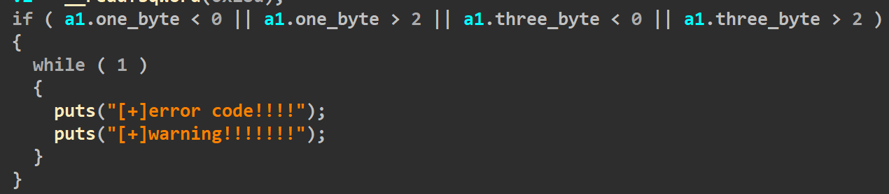
这个就是需要变量a1的第一字节和第三字节，要大于等于0 小于等于2。看下a1是什么？
一顿溯源之后，发现它就是qword_202500靠偏移得出来的值，再溯源一下，看看我们是否对这个qword_202500进行了输入
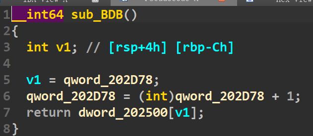
下图中发现了，我们是可以控制dword_202500的值，因此这意味着我们可以控制输入的值的第一第三字节来绕过检查。
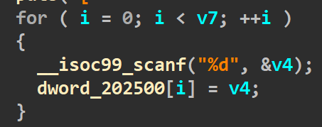
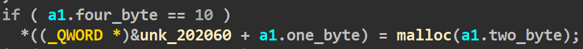
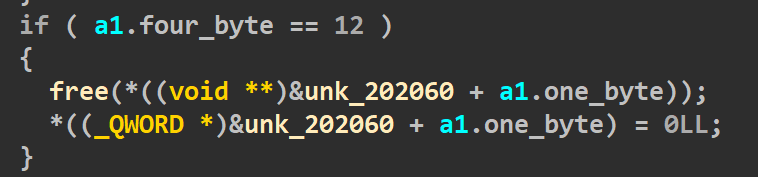
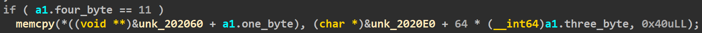
通过观察，发现了这三个核心函数，进入他们的条件就是控制第四字节的值即可。
大致思路:
free函数执行后把指针给置空了，这里无法利用，那只能去观察memcpy函数了。观察memcpy函数的第一个参数，发现它和malloc返回的地址是一样的，这就意味着我们可以往&unk_2020E0+64(__int64)a1.three_byte这个地址写入数据，然后复制给malloc中，可以复制0x40个字节，这里很明显存在溢出。
于是思路就是利用溢出修改当前chunk的下一个chunk(需要被free掉）的fd指针，然后我们再执行malloc时，是可以申请回来一个指定的地址。我们可以去修改__free_hook（free函数执行之前，会检查__free_hook，如果其值为NULL，则调用_int_free函数，否则调用__free_hook所指向的值）
申请回来之后，我们可以利用memcpy把system地址写入__free_hook所指向的地方。最后再把一个堆块里存入/bin/sh字符串，free掉这个堆块即可获取shell。
调试来构建exp
首先我们要先尝试去绕过下面这个if检查，并且尝试执行一下malloc函数，其他的暂时先随便输入即可。
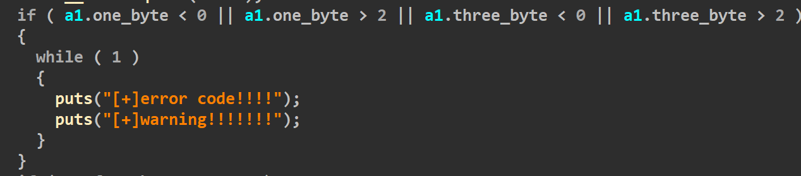
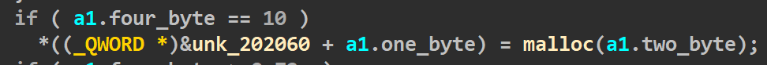
观察上面执行malloc的情况，这个要求我们的最高字节是10，才能执行malloc，然后第三字节决定了malloc的大小（two_byte是从低字节数的，第三字节是从高字节数的），然后这个把malloc这个地址记录在a1.one_byte偏移这里。
我们暂定申请0x10大小的chunk，然后将one_byte设置成0，那目前的exp应该为下面这个？
from pwn import * |
可是运行一下发现，if的检查没有过去，出现了死循环。把第四行注释取消调试一下。
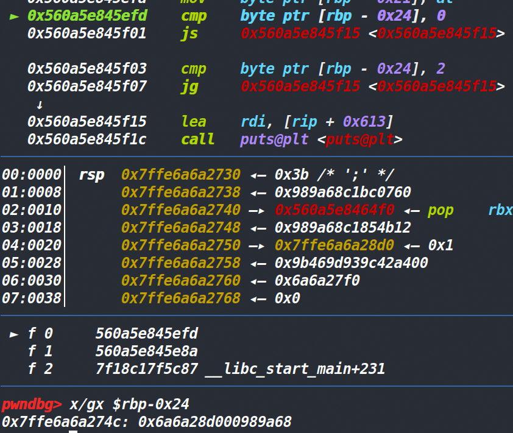
发现此时来到了if判断的地方，然后我们查看一下$rbp-0x24的值，发现末尾的是个什么玩意？989A68？ 这个肯定是过不了判断的。回想起现在看的是个十六进制的数字，我们用计算器转一下十进制看看。
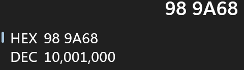
豁然开朗，因为我们输入的是十进制类型的数据，但是最后宏来取某个字节进行判断的时候，是对十六进制的数据进行操作的。因此为了绕过判断，我们要用十六进制的数据绕过，然后把其转换成十进制的数据输入。因此我们应该把10001000这个值改成a001000（a代表第四字节（我从低地址开始数的）设置成10为了执行malloc，第三字节的00，无所谓只要能绕过最开始的检查即可，第二字节的10代表的是malloc申请chunk的大小，第一字节的00相当于是unk_202060的索引，用来找到不同的堆块），然后转换成十进制输入。
所以最后的发送应该是
p.sendline('167776256') |
目前我们已经掌握了绕过if的方法，接下来就是调试来布局了。首先我们要溢出，不过在此之前我们肯定是要申请两个堆块，然后free掉后申请的那个堆块，去执行memcpy来修改free掉堆块的fd指针，再malloc回来。
值得一提的是，memcpy复制的内容是在这里输入的，我们应该提前在这里布局一下。
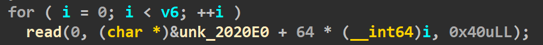
sprintf的格式化字符串漏洞
我们要将fd指针修改为__free_hook的地址，获取这个地址的前提是拿到libc基地址。此时就要用到前面的格式化字符串漏洞了，先看一下sprintf函数的执行情况。
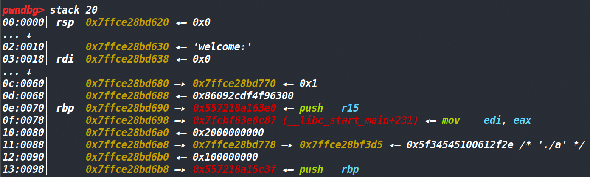
发现偏移15的地方存在__libc_start_main函数地址。不过由于这是sprintf函数，它的参数format存在rsi寄存器上，rdi已经被第一个参数占了，再填数据时是从rsi开始，跳过了rdi寄存器。因此是20（15+5）
此处接收libc基地址的payload为：
p.send('%20$p') |
然后就可以获取__free_hook的地址了，我们将其布置在这个地方
此时我们利用溢出将free掉的chunk的fd指针改成了__free_hook的地址，同时可以看见bins中已经出现了__free_hook的地址（如下图）
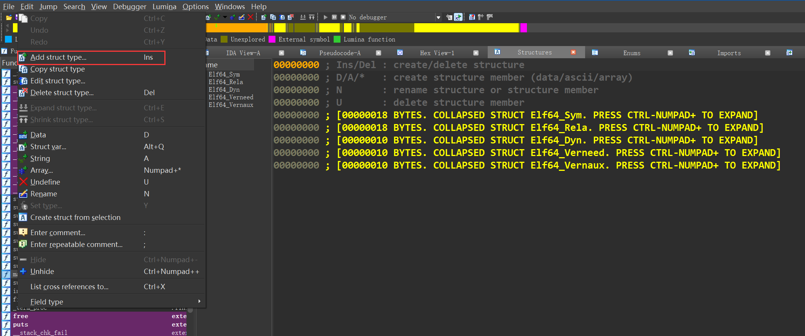
此时的payload
from pwn import * |
然后我们只需要两次malloc，就可以申请到一个位置在__free_hook地址上的堆块。
接着我们用memcpy函数把system的地址写在__free_hook堆块里（效果如下），此时__free_hook指向的就是system了。
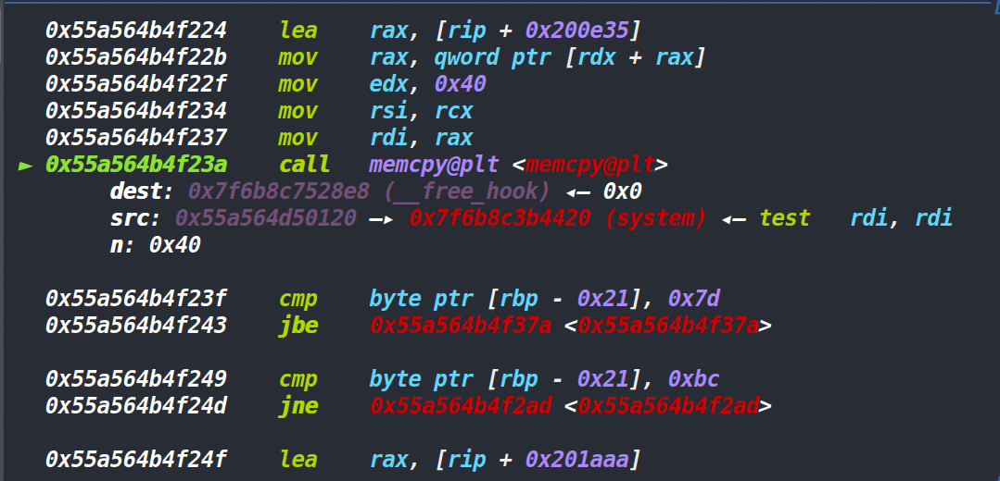
最后我们要free掉一个chunk，这个chunk里面装的都有什么不重要，只需要让这个chunk的地址去指向/bin/sh这个字符串即可（是指向的字符串，而非字符串的地址，因为system需要的是一个指向/bin/sh的地址，chunk的地址已经是一个指针了，我们并不需要再传一个指针，只需要写入字符串/bin/sh即可）
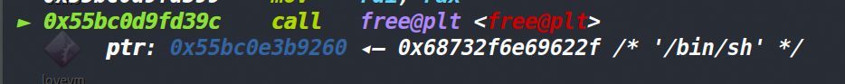
最后执行free即可获取shell。
EXP:
from pwn import * |